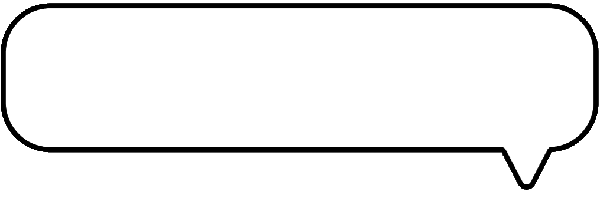

HI, I'M DIMAH
|
|
|
AR system using Meta Quest 3 integrating dynamic visual cues to help Parkinson's patients navigate complex spaces
Interactive 3D scene editing system with multi-modal segmentation and hit-testing algorithm
The "Smart Wardrobe" is concept—a design intervention that directly addresses the problem of clothing overconsumption by creating a physical constraint mechanism, unlike digital solutions that rely on willpower alone.
A quantitative user experience (UX) study conducted on the GoodReads website. The project aimed to evaluate how intuitive, efficient, and satisfying the process is for users when finding a book recommendation